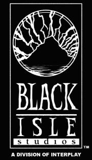

Fallout started out as a small project by a team unable to make a sequel to their own game, and from that has grown into an extremely popular series, having been bought out by Bethesda Softworks in 2004 with several more games published in the series after the initial games by Black Isle Studios at Interplay.

Despite the mainstream success of Fallout 3, New Vegas and 4, and the public failure of Fallout 76, the first two turn-based RPGs still hold a special place in many people's hearts.
This site intends to prove an explanation of these games and what made them great.